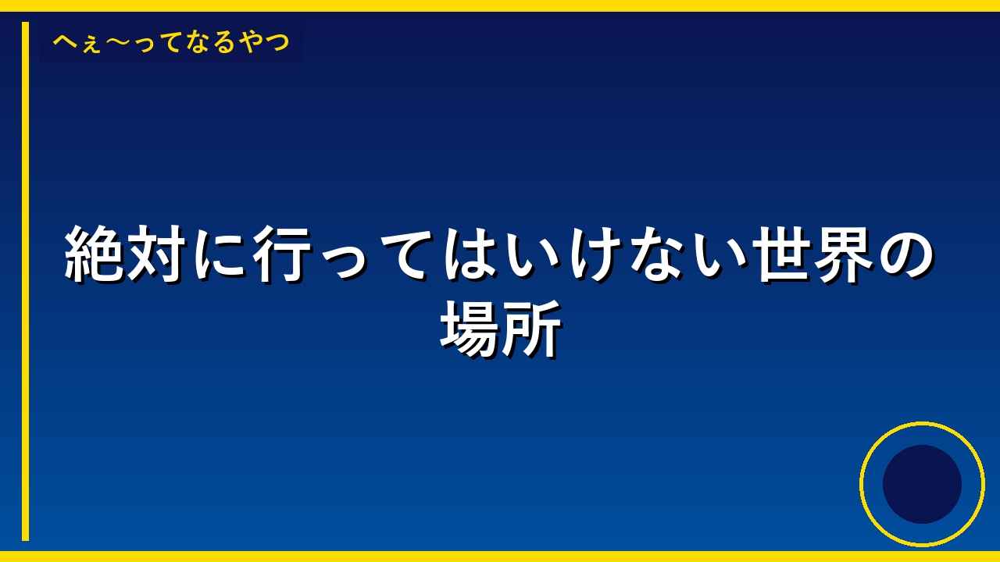

年収2500万円の40代女医、質素な生活送っていた「タクシーより地下鉄」
申し訳ございませんが、リンク先の記事の内容が表示されていないため、正確な要約ができません。 もし記事のテキスト内容をコピーして教えていただければ、小学生にもわかる言葉で3〜4文に要約させていただきます。

吉田知那美が自身のYouTube更新 初の「資さんうどん」訪問で食事を堪能
吉田知那美さんという有名なカーリング選手が、YouTubeで「資さんうどん」といううどん屋さんを初めて訪問した動画をアップしました。吉田さんがおいしくうどんを食べている様子を動画で紹介することで、資さんうどんというお店をもっと多くの人に知ってもらうことができます。有名人がお店を紹介すると、そのお店に行きたいと思う人が増えるので、お店の売上が増えたり、より多くのお客さんに来てもらえるようになります。

蒼井優「ラヴィット！」開始5分で出演終了「用事あって8時5分に出なきゃ」
蒼井優さんという有名な女優さんが、テレビ番組「ラヴィット！」に出演しましたが、放送が始まってからたった5分で帰ってしまいました。蒼井優さんは「8時5分に別の用事があるから出なきゃいけない」と言っていました。これは、ドラマの最終話を紹介するために出演していたのですが、時間が足りなくなってしまったということです。このような短い出演は珍しくて、視聴者たちが驚いたり笑ったりしました。
Anthropic、AI悪用レポートを公開 中国AI企業の「蒸留」、各国政府の監視・世論操作、生物兵器につながり得る研究を列挙
AIを作っているアンスロピック という会社が、自分たちのAI「Claude」がどのように悪いことに使われようとしたかについてのレポートを発表しました。危険な武器の作り方を調べたり、政府が国民を監視したり意見を操ったり、生物兵器の研究をしようとしたりする人たちが、このAIを使おうとしていたということです。また、中国のAI会社が、このClaudeの技術を盗んで自分たちのAIを作ろうとしていたことも見つかったので、会社はこれからもっと気をつけて、AIが危険に使われないようにしようと考えています。
GMOの世界ロボット運動会出場、言い出しっぺは新卒1年目の社員？ プロジェクト統括までしていた
GMOという会社の新卒1年目の社員が、世界中のロボットが競い合う大きな運動会に日本のロボットを出すことを提案して、そのプロジェクトをまとめました。この社員は入社したばかりなのに、ロボットの開発から大会当日まですべてを担当するという大きな役割を果たしました。このニュースが重要なのは、会社の経験が少ない若い社員でも、自分のやりたいことに挑戦できる環境があることと、その挑戦が実際に形になったことを示しているからです。
「婚活・恋活」にAI活用、20歳から39歳男女の3分の2 「模擬問答」で客観的意見求める
20代から30代の若い人たちの中で、3人に2人が恋愛や結婚相手を探すときにAI（人工知能）を使っているということがわかりました。多くの人がAIに悩みを相談するのは、友人に相談するより話しやすいと感じているからです。これは、恋愛や結婚について考えるときに、AIが重要な役割を果たすようになってきたことを示しています。
吉田知那美が自身のYouTube更新 初の「資さんうどん」訪問で食事を堪能
吉田知那美さんという有名な人が、YouTubeで「資さんうどん」といううどん屋さんを訪れた様子を動画にしてアップしました。吉田知那美さんは初めて資さんうどんに行ったので、おいしいうどんを食べながら、その様子を楽しく紹介しました。このような有名人の動画は、多くの人が見に来るので、資さんうどんというお店をもっと多くの人に知ってもらうことができます。

「永久追放以外ありえない」ドイツのサッカー地域リーグで蛮行、非難殺到
ドイツのサッカーの試合で、選手がレッドカード（赤いカード＝退場）をもらって怒り、審判に体当たりして地面に叩きつけるという大変な事件が起きました。審判さんが軽いけがをして、警察も調べることになりました。このような危ない行動は、スポーツの試合のルールを守る気持ちが大切だということを多くの人に気づかせてくれた出来事です。

張本智和、2戦連続圧勝でベスト8進出 卓球WTTチャンピオンズマカオ
日本の卓球選手・張本智和（はりもと ともかず）が、大きな国際大会「WTTチャンピオンズマカオ」で、2試合連続で相手に大差をつけて勝ちました。張本智和はこれでベスト8という上位8人に進むことができたので、とても強い選手たちとの試合に進めることになります。このような大きな大会で勝ち続けることは、日本の卓球をもっと強くするために大切で、これからのオリンピックなどでも日本が活躍できるチャンスが増えるという意味で重要です。

元「王様のブランチ」リポーターの女優、1st写真集で大胆な姿を披露へ
女優の大島璃乃さんが、初めての写真集を11月4日に発売することになりました。この写真集は沖縄と群馬県の故郷で撮影され、大島さんが今までチャレンジしたことのない大胆な写真も入っています。この写真集は大島さんが5年間かけて実現させたい夢だったので、本人もとても喜んでいます。女優としての新しい一面を見せることで、ファンにより自分のことを知ってもらうきっかけになるでしょう。

女性誌「VERY」の新モデルに藤田ニコル起用…雑誌業界が苦境に直面
申し訳ございませんが、記事の内容が表示されていないため、リンク先を確認することができません。 もしご手数でなければ、記事の内容をテキストでお知らせいただければ、小学生にもわかる言葉で要約させていただきます。

上白石萌音 鹿児島・桜島学校の校歌を作詞、10月で歌手デビュー10周年
有名な女優の上白石萌音さんが、鹿児島県の桜島学校の新しい校歌の歌詞を作りました。上白石萌音さんは10月で歌手として活動を始めてから10年になるという大事な時期に、この校歌作詞という大切な仕事をしました。校歌は学校の象徴となる大事な歌なので、有名な人が作詞することで、その学校がより注目されるようになります。このように芸能人が学校の校歌作詞に参加することで、その学校の子どもたちも誇りを持つようになるという良い影響があります。

『マインクラフト』秋アプデ「ウィルダネス・バウンド」9月15日配信へ。“鮮やか紅葉”の新バイオームや座れる「クッション」、新建築素材もよりどりみどり
人気ゲーム『マインクラフト』の秋のアップデート「ウィルダネス・バウンド」が9月15日に配信されることになりました。このアップデートでは、きれいな紅葉が特徴の新しいエリアや、座ることができるクッションなど、たくさんの新しいアイテムが追加されます。新しい建築素材も増えるので、プレイヤーはより自由で楽しい建物を作ることができるようになります。このアップデートにより、ゲームをプレイする人たちはより多くの楽しみ方を発見できるでしょう。

PS5『Marvel’s Wolverine』開発者インタビュー。『Marvel’s Spider-Man』の経験を経て作ったのはジェットコースターの冒険。展開と60fpsと暴力で描いた「ウルヴァリンらしさ」
PS5の新しいゲーム『Marvel's Wolverine』は、前のゲーム『Spider-Man』の経験を活かして作られた作品です。開発チームは、ジェットコースターのようなドキドキする冒険と、素早い動き、激しいアクションを組み合わせることで、ウルヴァリンというキャラクターの特徴をうまく表現することに力を入れました。このゲームが重要なのは、映画やアニメのキャラクターを、ゲームでどのように活き活きと表現できるかという新しい挑戦だからです。プレイヤーは、このゲームを通じて、今までにない迫力のあるウルヴァリンの冒険を体験できるようになります。

異界温泉宿経営＆ダンジョン探索生き残りRPG『アンダー ミュトス』発表。『ポケモン』『テイルズ』『GRANDIA』に携わったクリエイターたちが集った新作
カダスという会社が、『アンダー ミュトス』という新しいゲームを発表しました。このゲームは、温泉宿という居心地の良い場所での生活と、危険なダンジョン探索をまぜた冒険ゲームで、ポケモンやテイルズなどの有名なゲームを作った実力のあるクリエイターたちが協力して作られています。温泉宿で友達と過ごす穏やかな時間と、ダンジョンでドキドキする冒険の両方が楽しめるゲームなので、多くのゲームファンから注目されています。

ペンペンが部屋に!?「エヴァ×長崎ハウステンボス」がパワーアップ！コラボルームがグレードアップ＆新グルメ・グッズも
アニメ「エヴァンゲリオン」のキャラクター・ペンペンが泊まれる特別な部屋が、長崎のテーマパーク「ハウステンボス」にできました。このコラボルームは前よりもっときれいで楽しくなって、エヴァのおいしい食べ物やグッズもたくさん増えました。エヴァが大好きな人たちが、このテーマパークに行きたくなるようにするための工夫です。このコラボレーションで、ハウステンボスはもっと多くのお客さんに来てもらえるようになると期待されています。

秋を感じるアニメといえば？ アンケート〆切は9月17日【#秋分の日】
アニメ好きの人たちが「秋を感じるアニメ」について投票するアンケートが行われています。このアンケートは9月17日までで、秋分の日という季節の変わり目を記念して企画されました。みんなが好きな秋らしいアニメを知ることで、これからの季節にどんなアニメを見たらいいかの参考になります。このアンケートを通じて、アニメファンが季節を大切にする気持ちが広がり、秋というシーズンがより特別になるかもしれません。

【『アニメディア2026年10月号』（9月10日発売）に関するお詫びと訂正のお知らせ】
アニメの情報がのっている雑誌『アニメディア』の2026年10月号に、間違った情報がのってしまいました。出版社が間違いに気づいて、読者のみなさんにお詫びして、正しい情報を知らせています。間違った情報を読んだ人が、その間違った情報を信じてしまうかもしれないので、出版社が急いで訂正しているのです。これからは、間違いがないようにもっときをつけるようにするということです。

「三井住友Olive」契約者向けのVポイント還元施策 1万8000円相当ゲットも
三井住友銀行の「Olive」というサービスを使っている人が、ある条件をクリアすると最大1万8000円分のVポイントというポイントがもらえるキャンペーンが行われています。もらうには、毎月お金を積み立てる、給料を受け取る、クレジットカードで積み立てるという3つのことをして、9月25日までに始める必要があります。このキャンペーンは銀行のサービスをたくさん使ってもらうためのもので、条件を満たせば誰でも大きなポイントがもらえるチャンスです。

JR東海の「映画ちいかわ」コラボ 引換証での対応へ切り替え
JR東海と映画「ちいかわ」のコラボで、ミニトートバッグなどのプレゼントが人気がありすぎたため、配り方を変えることになりました。これからは駅でもらう「引換証」を持って、決められた場所で交換する方法に変わります。この引換証はなくしたら二度と作り直してもらえないので、大事に保管する必要があります。この変更により、欲しい人が公平にプレゼントをもらえるようになることが期待されています。

コメ安くても…麺とパンが人気に 売り上げが伸びる理由とは
お米の値段が安くなっているのに、麺やパンをたくさん買う人が増えています。これは、麺やパンの方がお米より安い値段で、たくさん食べられるからです。家計が苦しい人たちが、より安く食べられる食べ物を選ぶようになったということです。このことから、日本の人たちの生活が大変になってきていることがわかります。

マラソン中のランナー 体内に大麻の生理活性物質に似た成分を生成か
人間は走ったときに、脳から特別な物質が出ることがわかりました。この物質は、大麻という危ない薬に含まれている物質と似ているので、「ランナーズハイ」という気持ちよい状態になるのだそうです。これまで、走ると気持ちいいのはなぜかが謎でしたが、今回の研究でその理由がはっきりしました。このことがわかると、苦しい運動でも頑張れる理由や、運動の効果をもっとよく理解できるようになります。

「イコールアース図法」世界地図で北方領土の色描写巡り…日本語版は色変更
申し訳ございませんが、記事の内容が表示されていないため、要約することができません。リンク先の記事の本文をコピー&ペーストしていただければ、小学生にもわかる言葉で要約させていただきます。

「早く帰りたい」日本を旅した外国人観光客の多くが「混雑」に不満抱く
日本を旅した外国人観光客の多くが、観光地が混みすぎていて「早く帰りたい」と感じているということがわかりました。京都や富士山など人気の場所は特に混んでいて、観光客が楽しむどころか疲れてしまっているのです。これは日本の観光地が世界中から注目されている証拠ですが、混雑が理由で日本の良さを感じられない人が増えてしまうかもしれません。観光客が気持ちよく楽しめるように、観光地の混雑を減らす工夫が大切になっています。
絶対に近づいてはいけない!世界の危険すぎる島3選
毒蛇だらけの島、高濃度の放射能汚染地域、そして部族に命を狙われる孤島。世界には法律や自然が立ち入りを拒む場所が存在する。

プラハの天文時計に宿る呪い――製作者の復讐が生んだ100年の沈黙
チェコ・プラハの観光名所として知られる天文時計には、製作者による呪いの伝説が残されている。時計が止まると災厄が訪れるという言い伝えは今も信じられている。


見ると記憶が消える？都市伝説「くねくね」の怖すぎる正体
2003年にネット掲示板で生まれた怪異「くねくね」。目撃者が発狂し、正体を認識すると脳が壊れるという奇妙な特徴を持つこの存在は、なぜここまで恐れられるのか。


令和元年の1円玉は502枚だけ！財布に眠る激レアコインの秘密
普段何気なく使っている1円玉。でも令和元年製は一般に流通しておらず、わずか502枚しか存在しない。もし手元にあれば10万円超えの価値になるかも？